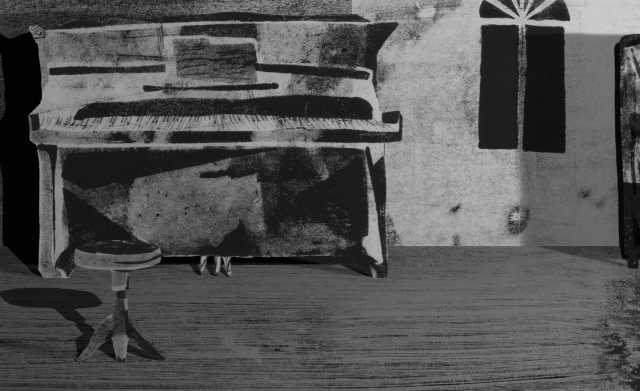

Two brothers flee home during the Nazi regime.Generations later, their granddaughter weaves a dreamlike story of the untold past crossing into the present.
I will take your shadow is an experimental autobiographical animated film consisting of hundreds of hand-made monotype drawings and prints that have been digitally combined and manipulated. In the years 1939-1940, the two brothers Jancsi and Bandi were forced to leave Vienna while fleeing the Nazi regime. They sailed for a few months aboard the refugee ship Darien II in a desperate search for a safe home and arrived at what was known as British Palestine. Today, the director, Jancsi’s granddaughter, is lost in her own dreams, which bring the past of the men in her family into her everyday reality. The untold transforms into a search for all that is lost, yet persists and unfolds in its absence. The film offers a glimpse into a world where waking and dreaming are equally real, where passed down stories become a constant reality.
Romania, 1930. My great-grandfather, a respected pediatrician, dies suddenly at age 50 from a brain stroke, leaving behind his wife and two sons: Jancsi (17) and Bandi (13). Shortly after, Bandi, upon returning from school, finds the body of his mother who had just committed suicide and a note saying: “I will take you with me”.
Within a year, Jancsi goes to Vienna where he studies medicine and starts a family, while Bandi, a gifted pianist, stays in Romania. A few years later, Jews everywhere are being persecuted against and deported as WWII and the Holocaust shatters my grandparents’ world once again. The two brothers are forced to flee and find a place aboard Darien II, a shabby small refugee ship with hundreds of desperate passengers journeying towards British Palestine. My grandfather joins with his wife, my grandmother, and together they raise a family of four children. 20 years later, Bandi (now my father’s beloved uncle) fulfils his mother’s cruel “testament” and commits suicide, continuing the family destiny of violent losses and pain.
As if my family’s history is not heavy enough to deal with, reflecting on the wider picture of history, I realize that in the fulfillment of my grandparents’ naïve quest for refuge and home, they unwillingly became involved in the Jewish-Arab conflict. They found a “home” in the land which was established as the State of Israel in a bloody war, where in 1948, nearly a million Arabs were deported and hundreds of their villages destroyed, thus transferring the historic waves of suffering and injustice from people to people, from generation to generation. In the midst of this spider web-like crossing of land and history, the outlines between the personal and communal are also blurred. In the middle is one word: home.
This film is not a historic research, rather a contemplation on loss and trauma, both personal and collective. It is a patchwork of memories, imagination and dreams, as well as observations about the contents of consciousness, world view, and memory.
“At my childhood home death was our next-door neighbor. We lived with him politely. After all, he is an old acquaintance of my father’s. Perhaps, while my father was playing the piano, he too would sit beyond our wall, put his ear to the cool whiteness, and listen.”
These sentences were part of an earlier version of the film, and were cut out in a later version.They reflect the connection between the lost innocence and beauty, and death that is enfolded within the tradition of classical music in Ayala’s family, as well as in many other Jewish Ashkenazi families, both in Israel and in other diasporas were they found a safe harbor. While classical music was a symbol longing and belonging to the high culture in Europe in the beginning of 20th century, at the same time it was from a perspective of the “cultural exile” of her grandparents, on the background of the destruction and loss of such large parts of the context and values of that culture, much in the spirit of Stefan Zweig’s words “... after the world of my own language sand and was lost to me and my spiritual homeland, Europe, destroyed itself.”
The artistic collaboration between Ayala and sound artist/musician Moses (Julian Hoffmann) was based on an ongoing dialogue of loss and hope. Based on the piano piece by J.S Bach Adagio, BWV 974 (music which Ayala had spent countless hours as a child listening to her father play), Moses combined the existing piece with his own unique, intuitive and experimental style. After several months of research and work on the musical motives behind the pieces, a dream-like, beautifully woven soundtrack emerged as a main vocabulary of the film.
18, 20, 21 October 2022: DOK Leipzig, International Leipzig Festival for Documentary and Animated Film (German premiere)
21, 22 October 2022: B3 Talent Forum Showroom, B3 Biennial of the Moving Image, Frankfurt am Main
11 November 2022 – 12 Februar 2023: As part of the exhibition „Identität nicht nachgewiesen“ at the NEUES MUSEUM, Staatliches Museum für Kunst und Design Nürnberg
13 November 2022 – 12 Februar 2023: As part of the exhibition „Identität nicht nachgewiesen“ at Museum Gunzenhauser, Kunstsammlungen Chemnitz
The story told in I will take your shadow is a micro cosmos which reveals major shifts in power structures and deeply ingrained generational traumas of the 20th century, especially those related to the Jewish, Israeli and Palestinian experiences. Although the events presented in the film occurred in the past and within a mostly European context, the effects of displacement are still very much a part of our current global reality. We believe the context of this film can be understood across social groups who may gain a different understanding on these issues through finding points of similarity within their own family history. We hope to generate conversation around the issues of diaspora, collective/intergenerational traumas, the meaning of home, and ultimately also a movement of healing.
For those who would like to continue this conversation directly with the creator of the film, Ayala, or would like more detailed information about the historical aspects of the film, please feel free to reach out to us:
Get in contactStella Schossberger text by Ayala Shoshana Guy
Stella was born in New York in 1915, and grew up in Baden near Vienna. She went to study medicine in 1934 in Vienna, because she wanted to know what the human body looks like from the inside. Shortly after, she married Jancsi and gave birth to her first son. In 1938, their life was violently interrupted by the rise of Nazism, and she sailed (alone) to the USA. Eventually, she arrived in British Palestine, where she was reunited with her family. The young family established a new life against the backdrop of international and local wars, as well as the founding of the state of Israel. Nevertheless, Stella’s house carried with ease the beauty of a lost world. She lived until the age of 105, and was a brave, kind, and wise person until her last days.
At the time of her death, I started working on the film.
Kai Hoffmann / Text by Moses
Kai, I could find only this picture of you as an adult. I don’t even know when you were born. You came into my life only very briefly, and it has been a long time since then. I was young when I realized I had lost my brother just as I found out I had one. But your memory will stay with me. Thank you for saying hello.